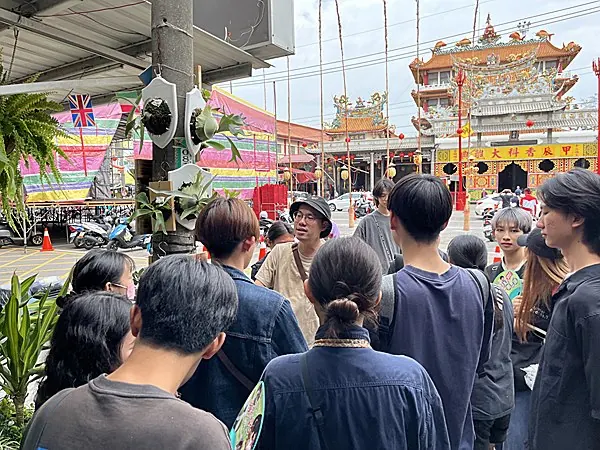
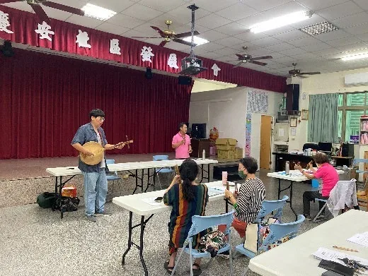
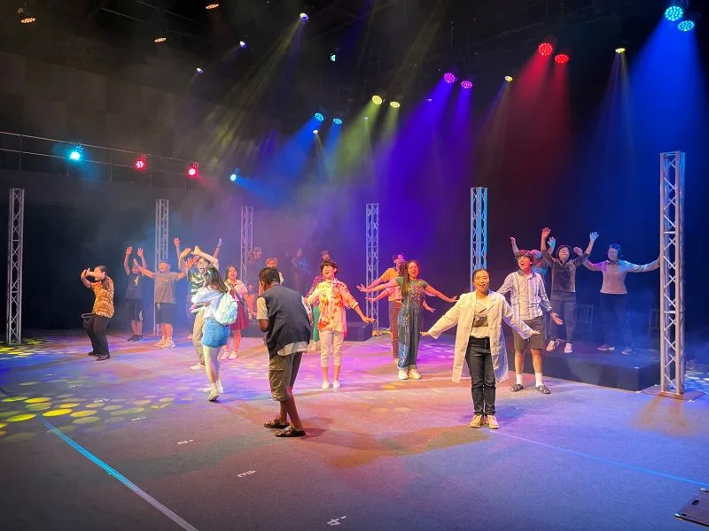
合作路徑
企業的一份支持，如何變成地方能記得、品牌能說清楚的永續成果？
合作不只是在活動背板上放上 logo，而是把企業資源帶進真實場域，和學生、居民、地方夥伴一起完成能被聽見、看見與延伸的作品。
ESG / CSR 預算
從年度永續預算開始，選擇一個有故事的支持方向
企業可以依預算、品牌目標與參與深度，支持地方共創、青年創作、文化內容製作或員工參與行動，讓支持一開始就連結明確的社會價值。
- 可規劃合作主題與年度期程
- 可對應 ESG、CSR、員工參與或品牌公益需求
- 從一開始就釐清希望留下的成果
為什麼適合企業合作
好的 ESG 合作，不只要有善意，也要有場域、有參與、有故事，並且能被清楚說明。
讓 ESG 從捐助延伸為參與
企業可支持一個正在地方發生的共創行動，讓員工、青年、居民與社區夥伴共同參與，而不是只留下贊助名稱。
讓品牌故事更有溫度
音樂、訪談、影像與展演能把永續支持轉化為容易被理解的故事，讓企業溝通不只停在數字與標語。
讓成果留下可分享的紀錄
每一次合作都可以留下照片、影像、作品與現場紀錄，讓企業回到內部或面向社會時，都有真實故事可以說。
讓支持連結具體社會價值
計畫同時連結地方文化保存、青年實作學習、社區參與與共融展演，企業支持可以對應清楚的社會價值。
企業合作方案
依企業預算、品牌目標與參與深度，選擇最適合的合作方向。
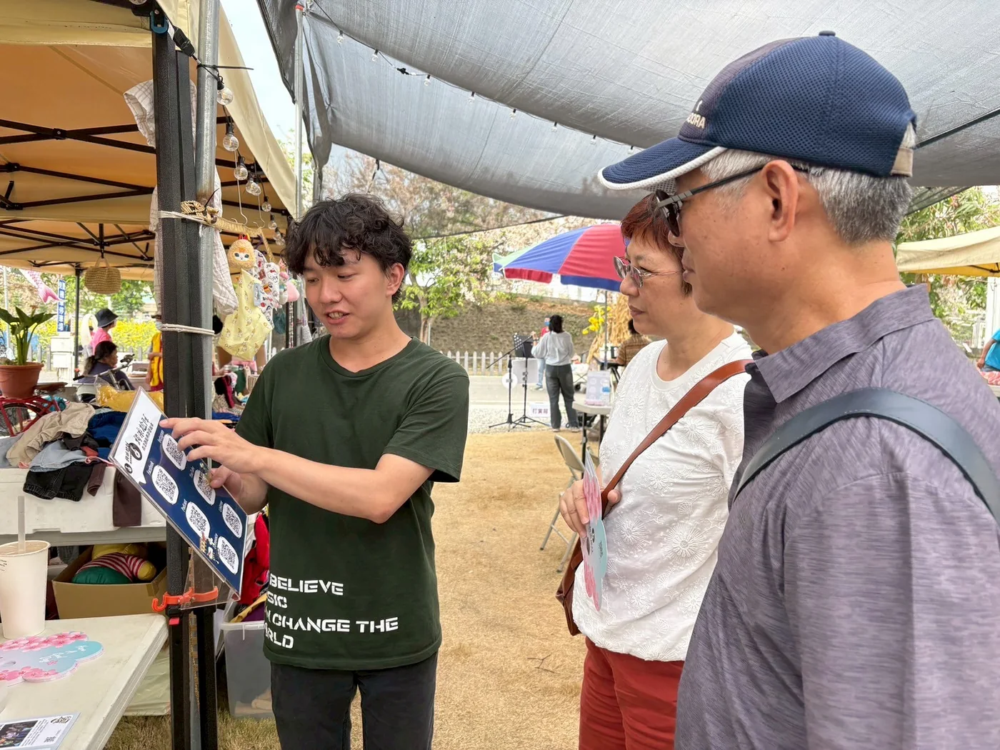
地方共創支持方案
支持學生與居民共同完成歌曲、音樂劇、工作坊或公開展演，適合希望建立地方連結與社會參與形象的企業。
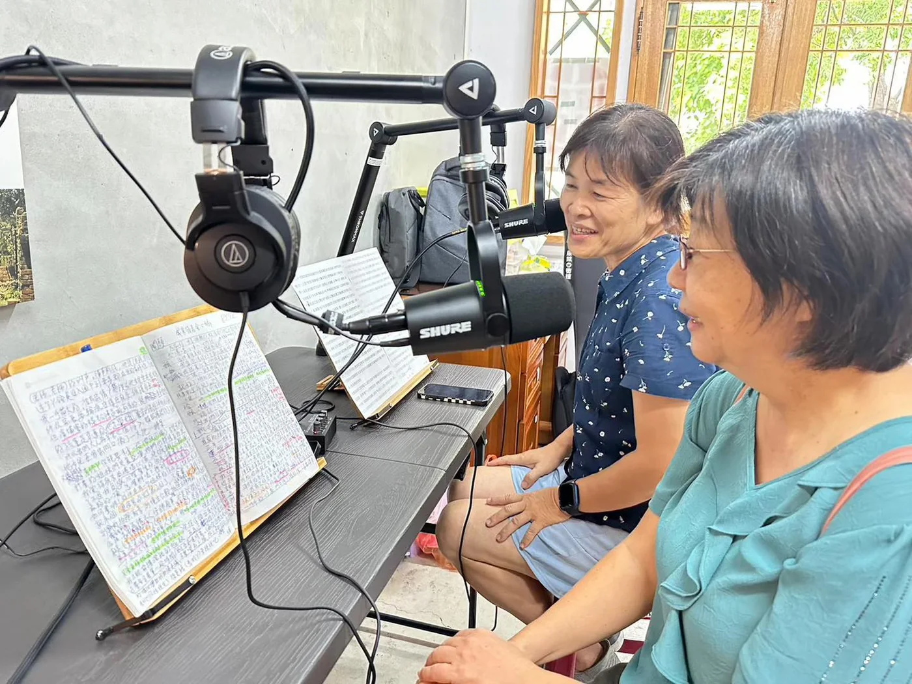
文化內容製作方案
支持 Podcast、地方訪談、短影音、教材、數位導覽或故事資料庫，讓企業參與文化保存與內容轉譯。
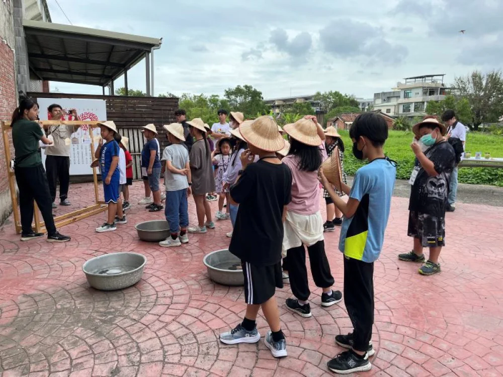
青年培力與創作獎助
以企業命題或永續議題引導學生創作，產出可公開分享的作品、提案或展演成果。
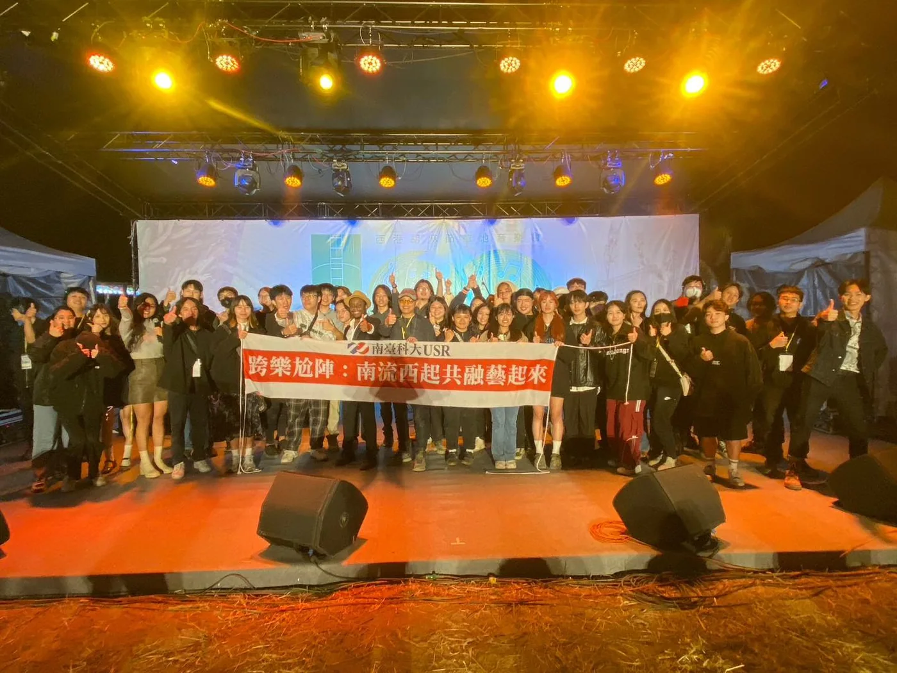
員工參與與地方走讀
規劃企業員工可參與的地方文化走讀、共融體驗、志工日或工作坊，讓 ESG 從公司內部被感受與理解。
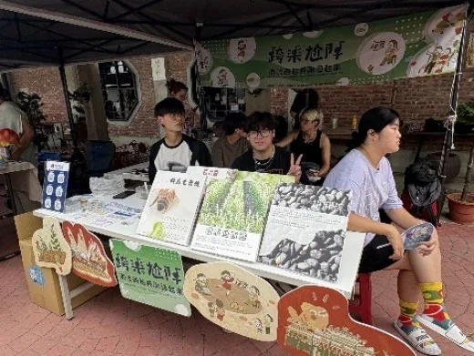
合作故事整理
把合作過程整理成企業能帶回使用的故事、照片、影像與年度重點，讓一次支持不只停在活動當天。
合作層級
從單次活動支持，到年度地方共創，企業可以依目標選擇參與深度。
合作不先綁定固定金額，而是先釐清企業希望留下的成果：一次可被員工感受的地方行動、一組可被公開溝通的作品，或一段可放進年度永續敘事的長期夥伴關係。
基礎支持
適合想先嘗試地方文化、員工參與或單次公益行動的企業。
- 地方走讀、工作坊或單場活動支持
- 企業員工可參與的地方體驗
- 活動照片、簡短紀錄與合作呈現
深度共創
適合希望把 ESG 支持轉化為故事、作品與青年培力成果的企業。
- 歌曲、Podcast、短影音或教材共創
- 學生團隊參與企劃、紀錄與展演
- 可供企業內外溝通的合作故事素材
年度夥伴
適合需要長期 ESG 故事、年度成果整理與地方關係累積的企業。
- 全年活動、展演與地方共創支持
- 企業員工參與、品牌故事與媒體素材整合
- 年度成果摘要、照片與影像紀錄整理
合作會留下什麼
一份支持可以留下作品、關係與地方記憶，而不只是活動結束後的一張合照。
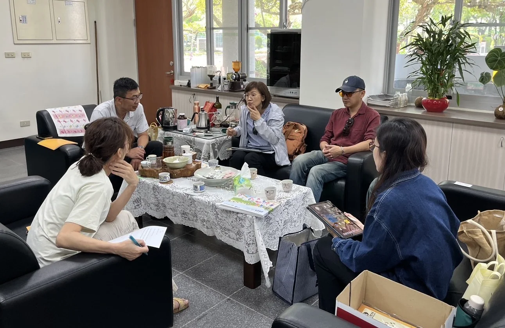
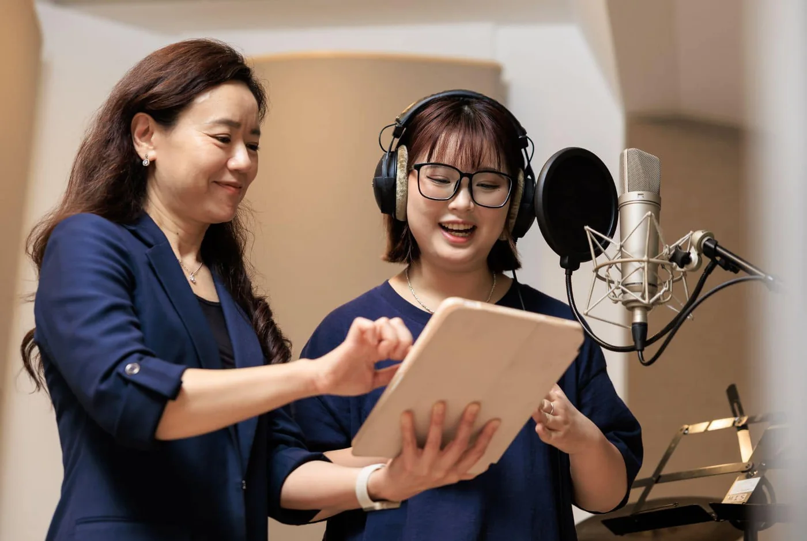
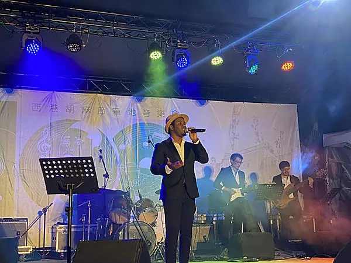
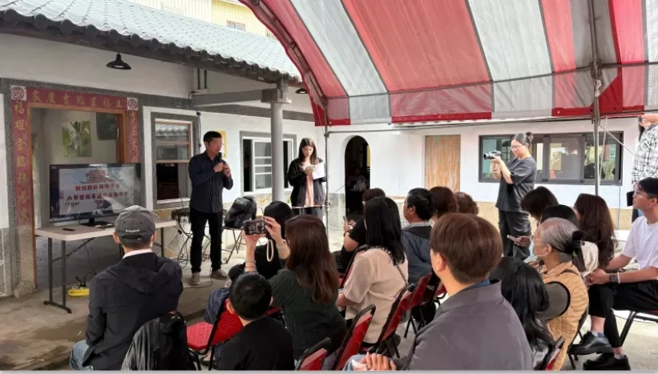
外部肯定與媒體介紹
企業合作需要好故事，也需要一組可以被信任的公開紀錄。
獎項、媒體報導與學校新聞可以作為 ESG 合作的第三方佐證，協助企業理解計畫的執行基礎、公共能見度與社會影響力。
台灣永續行動獎銅獎
以藝術共融實踐 SDG10，讓地方文化、青年學習與社會共融成果進入永續專業社群。
看得獎新聞《遠見》USR 大學社會責任獎肯定
計畫透過公開評選與報導，讓在地共融、音樂創作與大學社會責任的成果被更多人看見。
看相關報導Cheers《工作人》撰文介紹跨樂尬陣
報導從大學社會責任的角度介紹西港行動，也讓外部夥伴更容易理解：音樂、地方文化與青年實作，如何共同形成可延續的共創案例。
看 Cheers 報導一句話合作提案
讓企業 ESG 支持，成為地方記得、品牌也說得清楚的一段同行。
我們邀請企業成為「跨樂尬陣」共融文化夥伴，共同支持地方文化保存、青年實作培力、社區參與與公共展演。合作留下的照片、影像、作品與現場紀錄，可以回到企業內部，也可以面向社會說明：這份支持如何陪伴一個地方累積新的聲音。
聯絡合作
正在規劃 ESG、CSR、員工參與或地方共創計畫嗎？歡迎來信洽詢合作。
我們可以依企業關注議題、年度預算、參與人數與溝通需求，規劃適合的合作方式，也一起釐清合作後希望留下哪些故事與作品。合作洽詢信箱：cchsu@stust.edu.tw